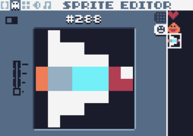
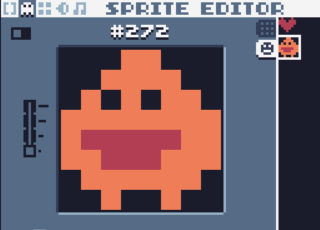
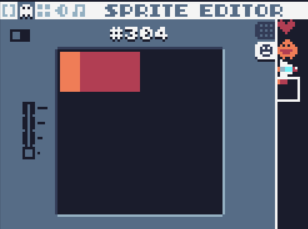
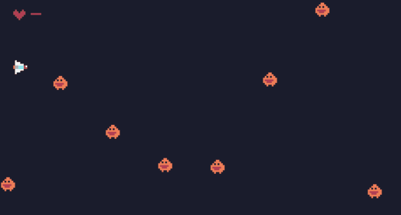

绘制精灵
目前，游戏可以玩，但只是方块不好看。
按F2，编辑精灵。
绘制玩家

绘制敌人

绘制炮弹

之前不论是玩家还是敌人，都有一个元素为c代表颜色的属性。现在要变为id，也就是sprite编辑器里的id。
玩家player：
p={
x=10,
y=10,
vx=0,
vy=0,
w=8,
h=8,
i=288,--id #288
b=20, --blood
r="p" --role=player
}
敌人：
function newenemy()
local e={
w=8,
h=8,
x=239,
y=math.random(0,135-20),
vx=-1,
vy=0,
i=272,--id
r="e" --role enemy
}
table.insert(gos,e) --add enemy to gameobjects
end
开火：
function fire()
--bullet
local b={
w=2,
h=2,
x=p.x+p.w,
y=p.y+p.h/2-1,
vx=2,
vy=0,
r="b", --bullet
i=304 --id
}
table.insert(gos,b)
end
然后，把rect绘制方块的方法替换为spr绘制精灵的方法。
function draw()
for i,v in ipairs(gos) do
spr(v.i,v.x,v.y,0,1,0,0,1,1) --使用spr方法代替之前的rect方法
end
draw_blood()
if p.b==0 then
draw_gameover()
end
end
现在的效果：
